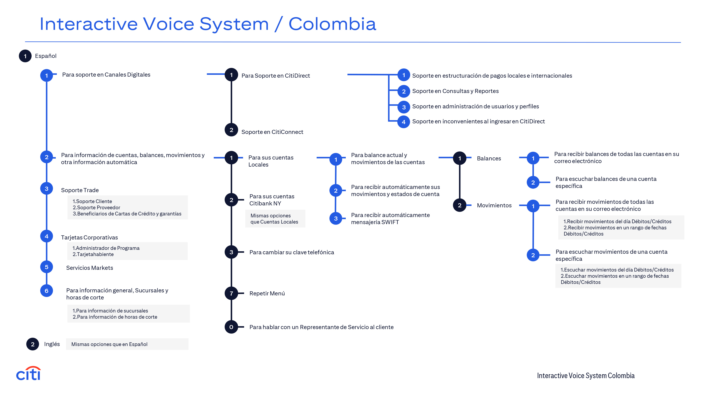
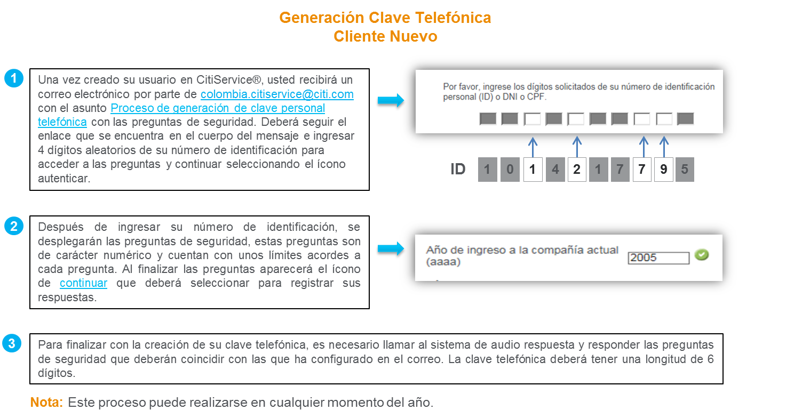
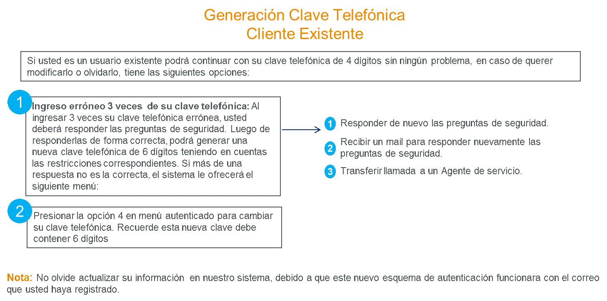

Centro de atención a Clientes Corporativos de Citibank®
CitiService®
En Citibank Colombia S.A. estamos comprometidos con prestar el mejor servicio a nuestros clientes y ofrecerles las mejores soluciones digitales para el manejo de sus cuentas y productos. Por esta razón, a lo largo de los años hemos enfocado nuestros esfuerzos en ampliar las capacidades de la banca electrónica CitiDirect® y ser un socio estratégico en su operación diaria. Dentro de esas funcionalidades clave, está la de designar a un Administrador de Seguridad (Security Manager) de CitiDirect® quien a su vez tendrá la facultad de asignar los permisos por tipo de perfil que se requieran a empleados de su compañía, dentro de los cuales está el de ¨Reportes y Consultas¨.
Aprovechando esta ventaja de CitiDirect® y con el objetivo de simplificar sus procesos de consultas, nos es grato informarle que, a partir del 1 de septiembre de 2024, para tener acceso a Citiservice ya no requerirá de una designación adicional vía el Administrador de Accesos Citiservice por su signa en ingles * SAM-Service Access Manager¨ pues, si el Administrador de Seguridad (Security Manager) de Citidirect le da al funcionario respectivo acceso al perfil de ¨Reportes y Consultas¨, tal funcionario ya podrá acceder a Citiservice. Por tal razón se eliminará la figura de Administrador de Accesos a CitiService® por su sigla en inglés “SAM – Service Access Manager”, así como el “Formulario de Autorización de Servicio CitiService®.
A partir de la fecha en mención, cada vez que su empresa requiera que un nuevo usuario tenga acceso a CitiService®, bastará con que el Administrador de Seguridad de CitiDirect® (Security Manager) le haya otorgado el privilegio de “Reportes y Consultas” para los productos a los que el usuario desea tener acceso.
De otro lado, para aquellos usuarios con acceso a CitiService® que no se encuentran creados en CitiDirect® con el privilegio de Reportes y Consultas, el servicio de acceso a Citiservice® seguirá siendo prestado hasta la fecha que se comunicará próximamente, por lo que le sugerimos que con la debida anticipación sean creados los usuarios correspondientes en CitiDirect®, y de esa manera asegurar la continuidad del servicio de acceso a Citiservice®.
Para mayor facilidad, nos permitimos compartir link en el que podrá encontrar la guía para crear usuarios y asignar perfiles en CitiDirect. (Ingresar en la ventana de búsqueda : “Create and assign Access Profiles to users”) Client Knowledge Center: CitiDirect CKC
Nuestro horario de atención es:
Días hábiles de lunes a viernes de 8:00am a 6:00pm
Guías de Referencia para Autoservicio
Conozca de forma ágil la obtención de información en el manejo de sus cuentas:
IVR

Herramientas de Auto Servicio
CitiDirect
Nuestra banca electrónica ofrece múltiples opciones para el manejo eficaz y oportuno de reportes dando click en cada una de las guías le indicamos como.
- Necesita la información detallada de su transacción
- Como consultar su estado de cuenta general
- Consultar su estado de cuenta detallado ahora es más fácil
- Como obtener el resumen de todas las transacciones
- Necesita el informe de detalle de pagos
- Como obtener su comprobante de pago
Horarios transaccionales
Book to Book: 6:00 p.m.
Interbancarias: 5:00 p.m
Cheques de Gerencia: 2:00 p.m.
Sabia que......
- Usted puede obtener su estado de cuenta en CitiDirect
- Usted puede obtener su estado de cuenta en CitiDirect.s
- Puede descargar su formulario digital para transferencias
- Se pueden generar reportes automáticos (Pagos, Rechazos, Estados de Cuenta)
- Puede realizar los Stop Payment a través de CitiDirect.
Descargue su formulario digital para transferencias
Defensor del Consumidor Financiero
Presente sus reclamos o quejas a través de los siguientes canales: página WEB www.defensoriasernarojas.com; correo electrónico defensoria@defensoriasernarojas.com; teléfono en Bogotá (+57) 601 4898285, de lunes a viernes (días hábiles) en el horario de 8:00 a.m. a 5:30 p.m., buzón telefónico 24 horas; o en la Carrera 16A No 80-63 oficina 601 Edificio Torre Oval en Bogotá, de lunes a viernes (días hábiles) en el horario de 8:00 a.m. a 12:00 p.m. y de 2:00 p.m. a 5:00 p.m.; también puede presentar su queja directamente con Citibank en nuestra Oficina Corporativa ubicada en la Carrera 9A No. 99-02 Piso 1 Local 104 en el horario: 9:00 a.m. a 4:00 p.m., de la que haremos traslado al Defensor del Consumidor Financiero dentro de los tres (3) días hábiles siguientes a la recepción de dicho documento, de acuerdo con lo dispuesto en el artículo 2.34.2.1.5 del Decreto 2555 de 2010.
Manual/Política de Tratamiento de Datos Personales Citibank
Preguntas Frecuentes
Acerca de CitiService®
CitiService ofrece información sobre sus operaciones financieras y consultas diarias como:
- Información general sobre los productos y servicios
- Confirmación de transacciones e información sobre débitos y créditos.
- Envío de copias de estados de cuenta, notas bancarias, cheques y comprobantes de depósito.
- Elaboración y envío de Certificaciones / Referencias bancarias de sus cuentas.
- Anulación de pagos/cheques y transferencias.
- Investigaciones sobre pagos y cobranzas.
- Copias SWIFT.
- Consultas sobre el estado de sus cartas de crédito


Dependiendo del tipo de solicitud y la complejidad del trámite que se requiera este puede generar un costo. (Copias de planillas, estados de cuentas de años anteriores, etc.). Para tener claridad sobre los costos relacionados con su solicitud, por favor comuníquese con la línea de atención telefónica de CitiService.
Antes de efectuar su consulta, es conveniente que tenga disponible el mayor detalle sobre la misma, por ejemplo, número de cuenta, monto, fecha, etc. Así nuestros representantes podrán responderle de manera más eficiente.
Las personas autorizadas por el administrador de usuarios de CitiService, delegado en su empresa, podrá solicitar a través del buzón de CitiService o su canal telefónico la siguiente información sin tener que enviar carta.
- Certificaciones de:
- Firmantes
- Banca Electrónica
- CitiService
- CitiFx Pulse
- Certificaciones para sus auditores.
- Petición Chequeras
- Stop Payments: Se puede hacer por Banca electrónica para ACH - B2B – cheques con fecha futuro y cheques / ACH
Si ya está autorizado por el administrador de usuarios de CitiService delegado en su empresa, pero su correo no está autorizado o cambió de dominio, solicite a su administrador de usuario de CitiService que envíe la solicitud de inclusión o cambio según el caso al correo electrónico Colombia.citiservice@citi.com.
- Copias de Swift
- Estatus de su enmienda
- Retorno de fondos
- Detención de pagos
- Estatus de pagos
CitiFX Pulse®
CitiFX Pulse es una plataforma global que brinda una amplia cobertura de divisas utilizando la red Citi a nivel mundial; La plataforma permite al cliente acceder permanentemente a los precios en los mercados de compra/ventas de divisas con rapidez y seguridad. La negociación es realizada a través de Internet, sin necesidad de instalar ninguna plataforma.
Si requiere soporte sobre el uso de CitiFX Pulse puede comunicarse de lunes a viernes de 8:30am a 6:00pm (días hábiles) a la línea de atención 571 – 6384024
Online Payment Channel (OLPC) y Mis Pagos al día (MPAD):
Si requiere soporte o realizar consultas como beneficiario de pagos, puede comunicarse de lunes a viernes de 8:00 a.m. a 6:00 p.m. (días hábiles) a la línea de atención en Bogotá (57) 601 6383621, opción 1, si es proveedor y requiere soporte de la plataforma Online Payment Channel (OLPC); y opción 2, si no es cliente Citi y requiere soporte de la plataforma Mis Pagos al Día (MPAD), módulo Quick Pay.
Oficina Corporativa
Bogotá
Citibank Colombia Centro de Servicios Calle 100,
Carrera 9A No. 99-02 Piso 1 Local 104
Horario: 9:00 a.m. a 4:00 p.m.
Tarjetas Corporativas
Tenemos disponibles los siguientes canales para atender las consultas y requerimientos de los Administradores de Programa y Tarjetahabientes:
- Canales para Tarjetahabientes y sus funcionalidades
-
Línea de Atención 57 601 6383838, opción 1-4-2 y línea nacional 01 8000 523838.
Principales Servicios brindados en el canal telefónico a los Tarjetahabientes:
- Activación de tarjetas.
- Bloqueo de tarjetas por pérdida o robo y reemplazo de las mismas.
- Asesoría para el proceso de solicitud de cargos no reconocidos.
- Consultar el disponible de la tarjeta.
- Reportar problemas con la tarjeta o transacción.
- Presentar reclamos.
- Realizar otras consultas generales o informativas.
- Atención las 24 horas al día, los 7 días de la semana.
- Canales para Administradores de Programa y sus funcionalidades
-
Portal web "MyCardsInfonet"
- Consulta disponible de la tarjeta.
- Consulta fecha y monto de pago mínimo.
- Solicitud de copias extractos o movimientos.
- Detalles sobre transacciones.
-
Línea de Atención 57 601 6383838 opción 1-4-1 (Opc.1 con clave / Opc. 2 sin clave) y línea nacional 01 8000 523838.
Principales Servicios:
- Activación de tarjetas.
- Bloqueo de tarjetas por pérdida o robo y reemplazo de las mismas.
- Asesoría para el proceso de solicitud de cargos no reconocidos.
- Asesoría para el proceso de solicitud de nuevas tarjetas o cancelaciones.
- Consultar el disponible de la línea de crédito; tanto del programa como de cada tarjeta.
- Reportar problemas con alguna tarjeta o transacción.
- Solicitar soporte para la navegación en el Portal web MyCardsInfonet.
- Solicitar el aumento temporal de líneas de crédito.
- Consultar el procedimiento para el aumento definitivo de líneas de crédito.
- Presentar reclamos.
- Realizar otras consultas generales o informativas.
- Atención de lunes a viernes de 8:00 a.m. a 6:00 p.m. (días hábiles).
-
Correo Electrónico: cards.co.service@citi.com
Servicios disponibles vía correo electrónico:
- Bloqueo de tarjetas por pérdida o robo y reemplazo de las mismas.
- Asesoría para el proceso de solicitud de cargos no reconocidos.
- Asesoría para el proceso de solicitud de nuevas tarjetas o cancelaciones.
- Consultar el disponible de la línea de crédito del programa y/o a nivel de tarjeta.
- Reportar problemas con alguna tarjeta o transacción.
- Solicitar soporte para la navegación en el Portal web MyCardsInfonet.
- Solicitar el aumento temporal de líneas de crédito.
- Asesoría en el procedimiento para el aumento definitivo de líneas de crédito.
- Asesoría en el proceso de inclusión o exclusión de Administradores de Programa.
- Presentar reclamos.
- Realizar otras consultas generales o informativas.
Comercio Exterior - Garantías, Cartas de Crédito y Cobranzas
Si usted es nuestro Cliente y requiere soporte sobre temas relacionados con Garantías, Cartas de Crédito y Cobranzas, puede comunicarse de lunes a viernes de 8:00 am a 6:00 pm (días hábiles) a la línea de atención en Bogotá: (57) 601 – 6383838 opción 3-1- 3 y a nivel Nacional 01 8000 523838 opción 3-1-3 o a través del Correo electrónico Latamtsp@citi.com
Si es Beneficiario de Garantías, Cartas de Crédito y Cobranzas, puede comunicarse de lunes a viernes de 8:00 am a 6:00 pm (días hábiles) a la línea de atención en Bogotá: (57) 601 – 6383838 opción 3-3, y a nivel Nacional 01 8000 523838 opción 3-3 o a través del Correo electrónico: Latamtsp@citi.com
Citi Supplier Finance
Si usted es nuestro Cliente y requiere soporte sobre temas relacionados con el estado, detalle, o confirmación de las instrucciones de pago emitidas por ustedes a través de nuestro programa de Adelanto de Pagos a Proveedores - Citi Supplier Finance, puede comunicarse de lunes a viernes de 8:00 am a 6:00 pm (días hábiles) a la línea de atención en Bogotá: (57) 601 – 6383838 opción 3-1- 2 y a nivel Nacional 01 8000 523838 opción 3-1-2 o a través del Correo electrónico: Supplychainlatam@citi.com
Si usted es proveedor y requiere soporte sobre temas relacionados al estado, detalle, o confirmación de su anticipo efectuado por su Cliente a través de nuestro programa de Adelanto de Pagos a Proveedores - Citi Supplier Finance, puede comunicarse de lunes a viernes de 8:00 am a 6:00 pm (días hábiles) a la línea de atención en Bogotá: (57) 601 – 6383838 opción 3-2 y a nivel Nacional 01 8000 523838 opción 3-2 o a través del Correo electrónico: Supplychainlatam@citi.com
Línea de atención de Trade Service Profesional (TSP) para soporte en la plataforma de Online Payment Channel
Si requiere soporte sobre temas relacionados a la navegación, creación de usuario, restablecimiento de usuario o cualquier consulta relacionada con la plataforma: ONLINE PAYMENT CHANNEL, módulo de Citi Supplier Finance, puede comunicarse de lunes a viernes de 8:00 am a 6:00 pm (días hábiles) a la línea de atención en Bogotá: (57) 601 – 6383838 opción 3-2 y a nivel Nacional 01 8000 523838 opción 3-2 o a través del Correo electrónico: Supplychainlatam@citi.com
Préstamos Corporativos
Si usted es nuestro Cliente y requiere soporte sobre temas relacionados al estado, detalle o documentación de sus obligaciones financieras adquiridas con nosotros, puede comunicarse de lunes a viernes de 8:00 am a 6:00 pm (días hábiles) a la línea de atención en Bogotá: (57) 601 – 6383838 opción 3 -1 -1 y a nivel Nacional 01 8000 523838 opción 3-1-1 o a través del Correo electrónico: Latamtradefinance@citi.com
Agradecemos tener presente que esta opción es destinada únicamente para atención de nuestros Clientes Corporativos.
Markets
Para requerimientos asociados a cumplimiento de operaciones FX, mensajes Swift, copias de declaraciones de cambio, confirmación disponibilidad de divisas para negociación de FX, copias de contratos Marco y certificados para operaciones de derivados, puede comunicarse a la línea en Bogotá (57) 601 6383838 opción 5, de lunes a viernes (días hábiles) de 8:00 a.m. a 6:00 p.m. o a través del correo electrónico csmarketsco@citi.com .
El fácil acceso a nuestros representantes es una de las mayores ventajas del concepto CitiService, Una sola llamada, un solo contacto, un único número de referencia.
Puntos de contacto
Para descargar y conocer el procedimiento de atención de Peticiones, Quejas o Reclamos (PQRs) haga clic aquí.
Teléfonos
Bogotá: (57) 601 492 03 42
Bogotá: (57) 601 492 03 42
Horario de atención: lunes a viernes (días hábiles) de 9:00 am hasta 5:00pm
Notificaciones legales
Correo Electrónico: legalnotificacionescitivalores@citi.com